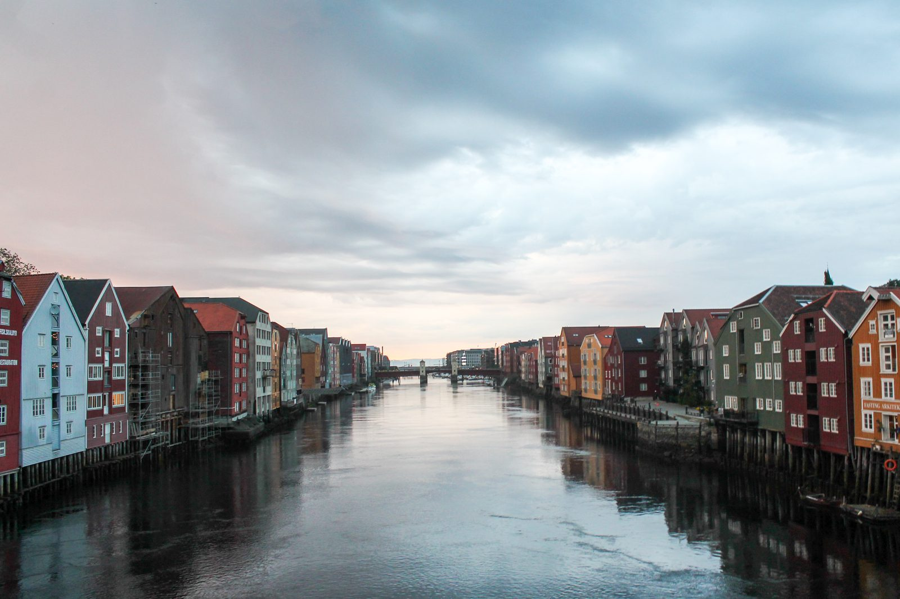

Logo og farger
Original masthead fra adressa.no, pluss avledet blå og hvit variant. Nettstedets primær- og sekundærfarge er observert i offentlig CSS. Appikon og resten av UI-systemet er egne forslag.
Et designsystem for nyheter som angår oss. Tydelig, lokalt og lett å bruke — fra første overskrift til siste avsnitt.
Uoffisielt forslag for hackathon. Original logo og observerte nettstedsfarger, kombinert med nye komponenter og regler.
Primærblått binder opplevelsen sammen. Hvit leseflate, mørk tekst og rolige skillelinjer gir nyhetene plass.
#005379Observert på adressa.no#28AAE2Observert · dekor#17212BForeslått tekstfarge#F4F5F2Foreslått bakgrunn#B42318Foreslått statusfargeHvitt på primærblått har ca. 8,4:1 kontrast. Aksentblått brukes ikke som liten tekst på hvitt. Mørk visning har egne semantiske verdier.
En redaksjonell serif gir overskriftene tyngde. Et nøkternt grensesnitt gjør veien til innholdet kort.
Variable fonter · Æ Ø Å æ ø å · 100–900
Selvhostet WOFF2 · SIL Open Font License
Gode nyheter begynner med god lesbarhet. Tydelige titler, korte innganger og et rolig tempo gjør det enkelt å finne frem — også på en liten skjerm.
Demo-redaksjonen · 3 min lesing · Fiktivt eksempel
Bitter og Inter er åpne fontvalg i dette forslaget. Dette fastslår ikke Adresseavisens offisielle fontsystem.
Gjenbrukbare byggeklosser med tydelige tilstander. Komponentene i startappen har tastaturstøtte, synlig fokus og forklarende navn.
Demonstrasjon av knapper og etiketter. Reelle appinteraksjoner finnes i React-startappen.
4 px grunnsteg · minst 44 px berøringsflate
4–8 px hjørner · 680 px maksimal lesebredde
Startappen er allerede satt sammen. Bytt innholdet, koble til en datakilde og bruk hackathon-tiden på idéen deres.
Kategorier, fritekstsøk, tydelig artikkelhierarki og en lesbar artikkelside.
Lagre saker lokalt, del artikkellenker og velg lyst eller mørkt tema.
Instruksjoner, tokenfiler, komponenter, demoartikler og assetkilder følger med.

Foto: Addrexoline · CC BY-SA 4.0 · Utsnitt
Oppdag små og store historier fra byen. Dette er et fiktivt eksempel laget for hackathon.
DEMO-REDAKSJONEN · 3 MIN
Ingen font- eller bildetjenester trengs under kjøring. Kilder og bruksstatus er dokumentert per fil.
Original masthead fra adressa.no, pluss avledet blå og hvit variant. Nettstedets primær- og sekundærfarge er observert i offentlig CSS. Appikon og resten av UI-systemet er egne forslag.
Addrexoline, Guy Delsaut, Cato Edvardsen og Ssu / Wikimedia Commons / CC BY-SA 4.0. Nedskalert og komprimert. Fotoene illustrerer steder, ikke demoens oppdiktede hendelser.
Bitter og Inter under SIL OFL 1.1, lokale WOFF2-filer med norske tegn. Lucide for grensesnittikoner. Komplette lisenser ligger i licenses/.
Åtte originale demosaker på norsk bokmål og fire originale SVG-illustrasjoner. Kode, dokumentasjon og egne illustrasjoner er MIT-lisensiert.